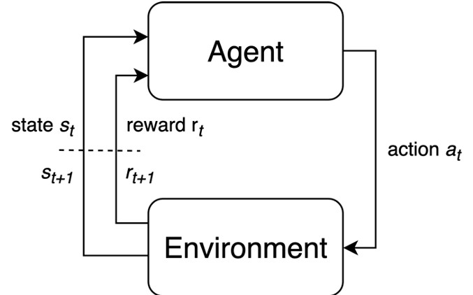
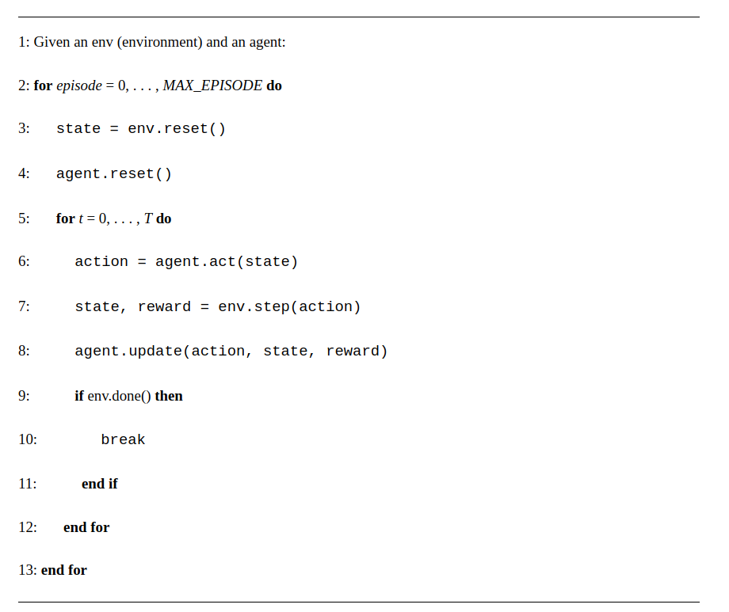

Introduction to MDP
Contents
Introduction to MDP¶
The elements of the Agent - Environment Interface¶
We start by reviewing the agent-environment interface with this evolved notation and provide additional definitions that will help in grasping the concepts behind DRL. We treat MDP analytically effectively deriving the four Bellman equations.
 Agent-Environment Interface
The following table summarizes the notation and contains useful definitions that we will use to describe required concepts later. With capital letters we denote the random variables involved and with small letters their specific realizations (values) - for example \(S_t\) is the random state variable and \(s_t\) is the actual state at time \(t\).
Symbol |
Description |
|---|---|
\(S_t\) |
environment state at time step \(t\), \(s \in \mathcal{S}\) the finite set of states |
\(A_t\) |
agent action at time step \(t\), \(a \in \mathcal{A}\) the finite set of actions |
\(R_{t+1} \in \mathbb{R}\) |
numerical reward sent by the environment after taking action \(A_t\) and transition to next state \(S_{t+1}=s'\) |
\(t\) |
time step index associated with each experience that is defined as the tuple (\(S_t, A_t, R_{t+1}\)). |
\(T\) |
maximum time step beyond which the interaction terminates |
episode |
the time horizon from \(t=0\) to \(T-1\) |
\(\tau\) |
trajectory - the sequence of experiences over an episode |
\(G_t\) |
return - the total discounted rewards from time step \(t\) - it will be qualified shortly. |
\(\gamma\) |
the discount factor \(\gamma \in [0,1]\) embedded into the return \(G_t\) |
In fully observed MDP problems, the agent perceives fully the environment state \(S_t\) - you can assume that there is a bank of sensors but they are ideal. In other words the agent knows which state the environment is in, perfectly2.
MDP Loop¶
We define a Markov Decision Process as the 5-tuple \(\mathcal M = <\mathcal S, \mathcal P, \mathcal R, \mathcal A, \gamma>\) that produces a sequence of experiences \((S_t, A_t, R_{t+1}), (S_{t+1}, A_{t+1}, R_{t+2}), ...\). The MDP (event) loop is shown below:
 This generic interface between the agent and the environment captures many problems outside of pure MDP including RL. The environment’s state in non-MDP problems can be experienced via sensor observations and the agent will build its own state estimate internally
At the beginning of each episode, the environment and the agent are reset (lines 3–4). On reset, the environment produces an initial state. Then they begin interacting—an agent produces an action given a state (line 6), then the environment produces the next state and reward given the action (line 7), stepping into the next time step. The agent.act-env.step cycle continues until the maximum time step \(T\) is reached or the environment terminates. Here we also see a new component, agent.update (line 8), which encapsulates an agent’s learning algorithm. Over multiple time steps and episodes, this method collects data and performs learning internally to maximize the objective.
The four foundational ingredients of MDP are:
Policy,
Reward,
Value function and
Model of the environment (optionally).
These are obtained from the dynamics of the finite MDP process.
where \(s^\prime\) simply translates in English to the successor state whatever the new state is.
The dynamics probability density function maps \(\mathcal{S} \times \mathcal{R} \times \mathcal{S} \times \mathcal{A} \rightarrow [0,1]\) and by marginalizing over the appropriate random variables we can get the following distributions.
State transition¶
The action that the agent takes change the environment state to some other state. This can be represented via the environment state transition probabilistic model that generically can be written as:
This function can be represented as a state transition probability tensor \(\mathcal P\)
where one dimension represents the action space and the other two constitute a state transition probability matrix.
Example:
Can you determine the state transition tensor for the 4x3 Gridworld in [MDP slides]()?
Reward function and Returns¶
The action will also cause the environment to send the agent a signal called instantaneous reward \(R_{t+1}\) 1. The reward signal is effectively defining the goal of the agent and is the primary basis for altering a policy. The agent’s sole objective is to maximize the cumulative reward in the long run.
Another marginalization of the MDP dynamics allows us to get the reward function that tells us if we are in state \(S_t=s\), what reward \(R_{t+1}\), in expectation, we get when taking an action \(a\). It is given by,
This can be written as a matrix \(\mathcal{R}^a_s\).
Returns¶
To capture the objective, consider first the return defined as a function of the reward sequence after time step \(t\). In the simplest case this function is the total discounted reward,
The discount rate determines the present value of future rewards: a reward received \(k\) time steps in the future is worth only \(γ^{k−1}\)times what it would be worth if it were received immediately. If \(γ <1\), the infinite sum above has a finite value as long as the reward sequence \({R_k}\) is bounded. If \(γ= 0\), the agent is “myopic” in being concerned only with maximizing immediate rewards: its objective in this case is to learn how to choose \(A_t\) so as to maximize only \(R_{t+1}\). If each of the agent’s actions happened to influence only the immediate reward, not future rewards as well, then a myopic agent could maximize by separately maximizing each immediate reward. But in general, acting to maximize immediate reward can reduce access to future rewards so that the return is reduced. As \(γ\) approaches 1, the return objective takes future rewards into account more strongly; the agent becomes more farsighted.
Notice the two indices needed for its definition - one is the time step \(t\) that manifests where we are in the trajectory and the second index \(k\) is used to index future rewards up to infinity - this is the case of infinite horizon problems where we are not constrained to optimize the agent behavior within the limits of a finite horizon \(T\). If the discount factor \(\gamma < 1\) and the rewards are bounded (\(|R| < R_{max}\)) then the above sum is finite.
The return is itself a random variable - for each trajectory defined by sampling the policy (strategy) of the agent we get a different return. For the Gridworld of the [MDP slides]() 3:
The following is a useful recursion to remind that successive time steps are related to each other:
Policy function¶
The agent’s behavior is expressed via a policy function \(\pi\) - that tells the agent what action to take for every possible state. The policy is a function of the state and can be:
Deterministic functions of the state the environment is in and by extension, the state that the agent is or believes (think about posterior belief) it is in.
Stochastic functions of the state expressed as a conditional probability distribution function (conditional pdf) of actions given the current state:
The policy is assumed to be stationary i.e. not change with time step \(t\) and it will depend only on the state \(S_t\) i.e. \(A_t=a \sim \pi(.|S_t=s), \forall t > 0\).
Value Functions¶
The value of a state is the total amount of reward an agent can expect to accumulate over the future, starting from that state. Whereas rewards determine the immediate, intrinsic desirability of environmental states, values indicate the long-term desirability of states after taking into account the states that are likely to follow, and the rewards available in those states.
State value¶
The state-value function \(v_\pi(s)\) provides a notion of the long-term value of state \(s\). It is equivalent to the utility we have seen in the [MDP slides](). It is defined as the expected return starting at state \(s\) and following policy \(\pi(a|s)\),
The expectation is obviously due to the fact that \(G_t\) are random variables since the sequence of states of each potential trajectory starting from \(s\) is dictated by the stochastic policy. As an example, assuming that there are just two possible trajectories from state \(s{11}\) whose returns were calculated above, the value function of state \(s_{11}\) will be
One corner case is interesting - if we make \(\gamma=0\) then \(v_\pi(s)\) becomes the average of instantaneous rewards we can get from that state.
Action value¶
We also define the action-value function \(q_\pi(s,a)\) as the expected return starting from the state \(s\), taking action \(a\) and following policy \(\pi(a|s)\).
This is an important quantity as it helps us decide the action we need to take while in state \(s\).
- 2
Note that Markov processes are sometimes erroneously called memoryless but in any MDP above we can incorporate memory aka dependence in more than one state over time by cleverly defining the state \(S_t\) as a container of a number of states. For example, \(S_t = \left[ S_t=s, S_{t-1} = s^\prime \right]\) can still define an Markov transition using \(S\) states. The transition model \(p(S_t | S_{t-1}) = p(s_t, s_{t-1} | s_{t-1}, s_{t-2}) = p(s_t|s_{t-1}, s_{t-2})\) is called the 2nd order Markov chain.
- 1
Please note that in the literature the reward is also denoted as \(R_{t}\) - this is a convention issue rather than something fundamental. The justification of the index \(t+1\) is that the environment will take one step to respond to what it receives from the agent.
- 3
Note that the actual values are different - these are sample numbers to make the point that the return depends on the specific trajectory.